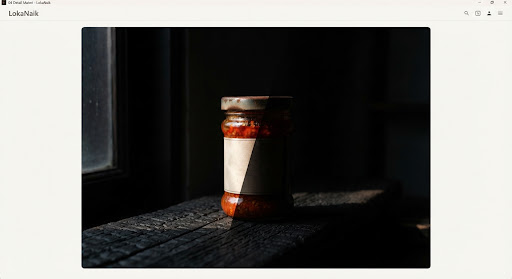
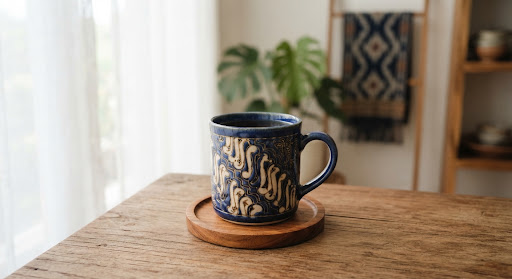

LokaNaik dirancang untuk memudahkan usaha kamu tanpa jebakan
biaya langganan atau pengumpulan data berlebih.
Ya. Ketiga modul, latihan, sumber bacaan, dan Studio Katalog
dapat digunakan tanpa mendaftar. Progres belajar disimpan
pada perangkat ini jika penyimpanan browser tersedia.
Tidak. Foto diproses di browser dan tidak diunggah oleh
LokaNaik. Rancangan hanya disimpan pada perangkat saat kamu
memilih Simpan. Jika membagikan ringkasan ke WhatsApp,
layanan tersebut memakai kebijakan privasinya sendiri.
Gunakan foto milikmu atau yang kamu punya izin pakainya. Hak
aset visual mengikuti pemiliknya. Daftar sumber dan status
hak aset tersedia melalui menu Sumber & privasi;
keberadaan foto di internet tidak otomatis memberi izin
penggunaan.
Langkah Mandiri Hari Ini
Mulai dari satu produk.
Lihat perbedaannya pada respons pembeli.
Tidak perlu menunggu punya kamera profesional atau toko fisik
megah. Mulai perbaiki foto satu produk dan susun informasinya
sekarang.
Kamu tidak memerlukan peralatan studio mahal bernilai
jutaan rupiah. Belajar di LokaNaik mengedepankan akal
cerdas memanfaatkan perlengkapan harian:
layers
Kertas Karton Putih / Manila
Digunakan sebagai reflektor pantulan cahaya alami
untuk menghilangkan bayangan gelap yang keras pada
produk kerajinan atau kemasan kuliner.
wb_sunny
Cahaya Jendela yang Tidak Langsung
Pilih jendela dengan cahaya menyebar. Jika matahari
menyinari produk secara langsung, geser posisi atau
gunakan tirai tipis; kondisi cahaya bergantung
lokasi dan cuaca.
edit_note
Buku Catatan Harga & Takaran Berat
Sediakan rekaman manual ukuran gramatur, dimensi
panjang-lebar kemasan, dan harga dasar sebelum
diunggah ke sistem katalog digital.
Langkah belajar mandiri
Latihan dengan produkmu
Prinsip Platform LokaNaik
Belajar sesuai kebutuhan usahamu
check_circle
Praktik dengan Produk Sendiri
Coba setiap langkah pada produkmu. Bandingkan hasil
foto dan periksa kembali informasi sebelum
dibagikan.
lock_open
Materi Terbuka Langsung
Tidak ada dinding pembayaran tersembunyi, tidak
perlu mendaftarkan email untuk sekadar membaca modul
praktis.
devices
Belajar di Berbagai Layar
Materi, checklist, dan Studio tersedia dalam
tampilan ponsel maupun desktop. Tidak perlu memasang
aplikasi tambahan.
handshake
Setiap usaha lokal berhak atas langkah besar pertama yang
bermartabat.
auto_awesome
Modul Foto Produk
schedule
12 Menit Praktik •
local_fire_department
Tingkat Dasar
01 — Foto Produk
Foto produk dengan cahaya jendela, reflektor sederhana, dan
tiga sudut yang memperlihatkan bentuk asli.
Menghasilkan satu rangkaian foto yang memperlihatkan bentuk,
warna, dan detail produk secara jelas.
Siapkan satu produk, ponsel, meja, dan karton putih. Kita
akan membandingkan arah cahaya, memilih latar yang tenang,
lalu membuat tiga foto yang saling melengkapi.
wb_sunny
Bagian 1: Panduan Praktis
Mengatur Posisi Produk Terhadap Jendela
Letakkan produk di samping jendela dengan cahaya tidak
langsung. Geser jarak dan arah produk sampai tekstur
terlihat tanpa sorotan berlebihan. Kondisi cahaya berubah
mengikuti lokasi, cuaca, dan waktu.
1
Cahaya Menyebar
Amati arah bayangan. Geser produk atau gunakan tirai
putih tipis jika sinar langsung menghasilkan bagian
terlalu terang.
!
Latar Sederhana
Gunakan kertas atau bidang polos yang bersih. Sisakan
ruang di sekitar produk dan singkirkan benda yang
mengalihkan perhatian.
✓
Jaga Ketajaman
Bersihkan lensa, ketuk fokus pada produk, dan
stabilkan ponsel. Perbesar hasil foto untuk mengecek
tulisan label serta detail tepi.
lightbulb
Tips UMKM:
Jika sinar matahari luar ruangan terlalu terik menembus
jendela, pasang kain gorden putih tipis (vitrase) atau
tempelkan 1 lembar kertas kalkir pada kaca jendela
sebagai filter difusi instan.
compare
Eksperimen Studio Visual
Perbandingan: Keajaiban Reflektor Kertas Manila
Geser pembanding untuk melihat ilustrasi detail bayangan
dengan dan tanpa reflektor. Coba letakkan karton putih di
sisi berlawanan dari jendela untuk memantulkan sebagian
cahaya ke produk.

Tanpa Reflektor (Bayangan Gelap Tajam)
Dengan Reflektor (Bayangan Lembut Terisi)
drag_indicator
arrow_back
Geser ke kiri: Tanpa Reflektor
Geser ke kanan: Dengan Reflektor
arrow_forward
view_in_ar
Bagian 2: Tiga Sudut Wajib
3 Sudut Pengambilan Gambar untuk Katalog
Pembeli online tidak dapat menyentuh barang kamu secara
langsung. Tiga sudut ini menjawab keraguan konsumen
terhadap dimensi, proporsi, dan detail keindahan produk.

Sudut 01 • Eye-Level (Tegak Lurus)
Mata Sejajar Produk
Kamera sejajar dengan tinggi produk. Sangat ideal
untuk menampilkan proporsi asli botol kemasan, toples
kue, atau tas rajut.
Sudut 02 • Sudut 45 Derajat
Perspektif Pembeli
Sudut alami mata manusia saat melihat meja.
Menampakkan bagian atas sekaligus bagian samping
produk dalam satu bingkai.
Sudut 03 • Flat Lay (90°)
Bidikan Dari Atas
Tegak lurus dari atas ke bawah. Sempurna untuk produk
busana kain, paket hampers isi majemuk, maupun sajian
kuliner piring.
Sandi unik dan verifikasi dua langkah
Gunakan frasa sandi panjang yang berbeda untuk setiap
layanan. Pengelola sandi tepercaya membantu membuat serta
menyimpannya. Aktifkan MFA melalui pengaturan resmi dan
simpan kode pemulihan di tempat privat.
Jangan memakai ulang sandi email untuk akun toko.
Buka menu Keamanan pada aplikasi atau situs penyedia
yang kamu ketik sendiri.
Pilih metode verifikasi yang ditawarkan penyedia; jangan
bagikan kode pemulihan.
Kenali phishing dan periksa alamat situs
Pesan mendesak tidak membuktikan bahwa pengirim adalah
petugas. Periksa nama domain dengan teliti, bukan hanya
logo atau ikon gembok. Jika ragu, tutup tautan dan buka
aplikasi resmi untuk memeriksa pemberitahuan.
Jangan memasukkan kredensial pada tautan yang belum kamu
pastikan.
Waspadai salah eja dan nama merek yang ditempelkan pada
domain asing.
Jangan memasang berkas aplikasi dari pesan yang tidak
kamu harapkan.
OTP dan kebiasaan aman sehari-hari
Kode OTP digunakan untuk proses yang kamu mulai sendiri
pada layanan yang benar. Petugas lewat chat tidak perlu
meminta kodenya. Periksa sesi perangkat secara berkala dan
perbarui aplikasi dari toko resmi.
Tolak permintaan OTP, sandi, atau kode cadangan melalui
chat dan telepon.
Periksa pembayaran di aplikasi resmi, bukan hanya dari
foto bukti transfer.
Jika ada aktivitas asing, gunakan panduan pemulihan
penyedia dan keluarkan sesi yang tidak dikenal.
Nama, kategori, bahan, dan varian
Nama produk perlu menjelaskan barangnya. Pisahkan jenis
produk dari variasinya agar pembeli tidak perlu menebak
isi paket. Catat bahan berdasarkan keterangan pembuat,
bukan hanya penampilan pada foto.
Gunakan pola jenis + varian + ukuran: Keripik Pisang
Cokelat 225 g.
Kelompokkan kategori dengan konsisten, misalnya Kuliner
atau Kerajinan.
Tuliskan bahan, ukuran beserta satuannya, pilihan
warna/rasa, dan isi per kemasan.
Harga dan ketersediaan yang jelas
Tentukan apakah harga berlaku per satuan, per bungkus,
atau per set. Bedakan stok siap kirim dengan barang yang
dibuat setelah dipesan. Jika waktu produksi berubah,
perbarui keterangannya sebelum dibagikan.
Tulis Rp 25.000 / bungkus, bukan hanya angka tanpa
konteks.
Untuk produk kriya, ukur panjang × lebar × tinggi; untuk
makanan, tulis berat bersih.
Jelaskan status tersedia atau pre-order dan
konfirmasikan waktu proses sesuai kondisi usaha.
Susun hierarki informasi, lalu uji keterbacaan
Letakkan foto dan nama di bagian yang mudah ditemukan,
diikuti harga, spesifikasi, dan deskripsi singkat. Kalimat
konkret lebih membantu daripada pujian yang tidak
menjelaskan produk.
Tulis kegunaan dan ciri yang benar-benar ada; hindari
klaim tanpa bukti.
Baca pratinjau pada layar ponsel: apakah nama dan harga
terbaca tanpa memperbesar?
Cocokkan kembali foto, varian, ukuran, harga, dan status
sebelum mengunduh ringkasan.
Contoh penerapan
Latihan: letakkan kemasan keripik di meja dengan label
menghadap kamera. Ambil foto depan untuk nama dan varian,
sudut 45° untuk bentuk kemasan, lalu foto dari atas untuk
isi dalam wadah bersih.
Kesalahan yang perlu dihindari
Latar terlalu ramai: singkirkan benda yang tidak
menjelaskan produk.
Foto kabur: bersihkan lensa, ketuk fokus pada produk, dan
stabilkan ponsel.
Warna berlebihan: hindari filter yang membuat warna produk
berbeda dari aslinya.
Ringkasan
Cahaya samping membantu melihat bentuk; karton putih
mengisi sisi yang gelap.
Periksa ketajaman dan warna sebelum memotret produk
berikutnya.
Foto depan, sudut 45°, dan dari atas menjawab kebutuhan
informasi yang berbeda.